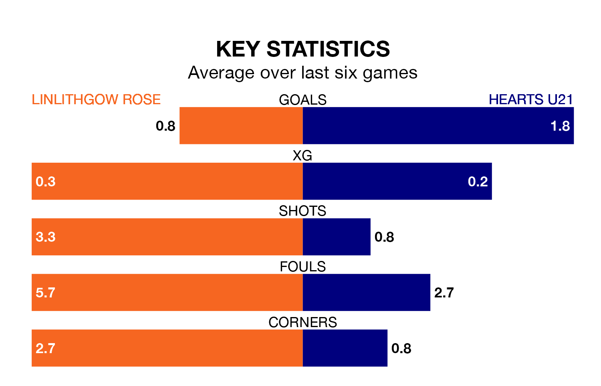

Hearts U21 face a challenge to maintain their high-scoring form away against a tight Linlithgow Rose defence on Saturday.
With 78 goals in 29 games, Hearts U21 are the second-highest scorers in the Lowland Football League ahead of the 3pm kick-off at Prestonfield.
They face a Linlithgow Rose side who have scored 51 in 28 matches, but conceded only 32 goals, putting them third among the league's tightest defences – only Tranent Juniors and Albion Rovers have conceded fewer goals.
Hearts U21 are second in the table after 29 games, of which they have won 17 and drawn six, earning 57 points.
Linlithgow Rose are five places behind Hearts in seventh, with 12 wins and nine draws putting them on 45 points.
The home team are in mixed form in the Lowland Football League, with two wins and a draw from their last six games.
With four wins and two losses over that period, the visitors' form is better – they have taken 12 points from 18, compared to Linlithgow Rose's seven.
Linlithgow Rose's last match was on March 9, a 1-1 draw against Cumbernauld Colts.
Hearts U21 beat BSC Glasgow 2-1 last time out, on Tuesday.
Updated: 15:10 (UTC), 15/03/24